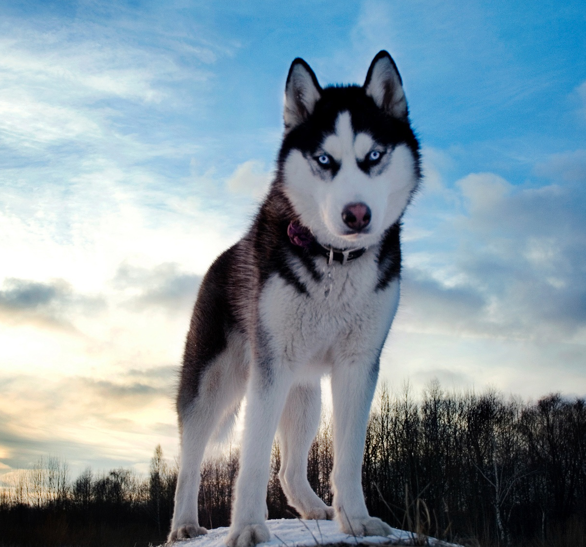

 El husky siberiano es una raza de perro de trabajo originaria del noreste de Siberia (Chukotka, Rusia). Esta raza presenta un acusado parecido con el lobo. Originalmente fue criado por la tribu chukchi, en la que se utilizaba como perro de compañía para pastorear a los ciervos, tirar de los trineos y mantener calientes a los niños; en la actualidad se encuentra en diversas zonas del mundo.
El husky ha sido descrito como un representante del comportamiento del ancestro del perro: el lobo, ya que muestra una amplia gama de comportamientos propios de su antepasado.9 Si el perro se adiestra y socializa adecuadamente desde que es joven —preferentemente cachorro—, puede ser una buena mascota de familia, ya que son cariñosos con personas de todas las edades. A nivel de inteligencia, está posicionado en la escala con el número 45 de la clasificación de Stanley Coren acerca de la inteligencia de los perros.10 Una clase de entrenamiento de obediencia diaria de quince minutos será muy útil,11 Necesitan capacitación constante y les va bien con el adiestramiento canino de refuerzo positivo. Es conocido por aullar en lugar de ladrar.12 Demuestra una gran felicidad estando en jauría y siempre prevalece un macho alfa; aun cuando solo se trate de dos perros, uno de los dos demostrará ser el dominante. También busca jerarquías con los humanos, por lo tanto es necesario presentarse ante él como el Alfa. No es recomendable que vivan en soledad puesto que precisan de un grupo (humano o jauría). Al ser perros con mucha resistencia, pueden recorrer muchos kilómetros, lo que hace difícil encontrarlos en caso de extravío, por lo que es necesario que tengan microchip y no es recomendable dejarlos correr sin supervisión.